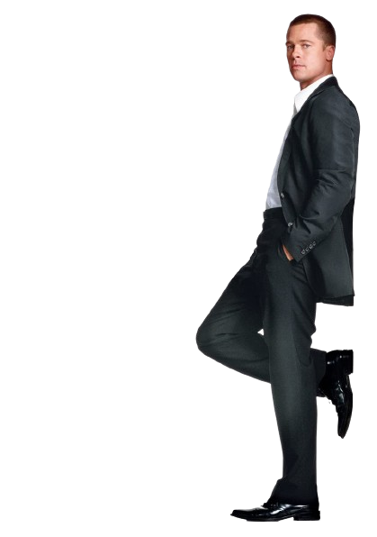

Mrs. Smith
- Occupation: Skilled assassin working for a mysterious organization.
- Marriage: Married to John Smith (Brad Pitt), unaware of each other's assassin lives.
- Personality: Strong, intelligent, and independent with a sardonic sense of humor.
- Action Sequences: Proficient in marksmanship and hand-to-hand combat; Angelina Jolie performed many stunts.
- Wardrobe: Iconic and stylish outfits, reflecting sophistication and deadly skills.
- Chemistry with Co-Star: On-screen chemistry with Brad Pitt contributed to the film's success.
- Themes: Explores trust, secrets, and relationship complexities amidst high-octane action and humor.

Mr. Smith
- Occupation: Skilled assassin working for a mysterious organization.
- Marriage: Married to Jane Smith (Angelina Jolie), unaware of each other's assassin lives.
- Personality: Strong, intelligent, and independent with a sardonic sense of humor.
- Action Sequences: Proficient in marksmanship and hand-to-hand combat; Brad Pitt performed many stunts.
- Wardrobe: Iconic and stylish outfits, reflecting sophistication and deadly skills.
- Chemistry with Co-Star: On-screen chemistry with Angelina Jolie contributed to the film's success.
- Themes: Explores trust, secrets, and relationship complexities amidst high-octane action and humor.